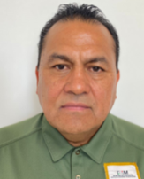

Mtro. Ignacio Fraire Zúñiga
TItular de la Oficina de Representación del INM en Aguascalientes
Formación Académica
- ▴ Maestría en Desarrollo Rural.
- ▴ Licenciatura en Ingeniería Agrónoma Fitotécnia.
Información de Contacto
- Teléfono Personal: 4921031039
- Teléfono de Trabajo: 4499182464 ext. 8200201
- Email Institucional: ifraire@inami.gob.mx
Experiencia Laboral
- Año de ingreso al INM: 2019
- ▴Oficina de Representación en el Estado de Aguascalientes:
- 01/06/2022 - a la fecha: Titular de Oficina de Representación.
- ▴Oficina de Representación en el Estado de Zacatecas:
- 16/01/2019 - 31/05/2022: Titular de la Oficina de Representación.
Carrera Profesional
Cuenta con una trayectoria de más de 20 años de experiencia en la Administración Pública, ocupando los siguientes cargos, entre otros:
- ▴ Agencia de Desarrollo Rural en el Estado de Zacatecas. Secretaría de Agricultura, Ganadería, Desarrollo Rural, Pesca y Alimentación (SAGARPA): Coordinador de la Agencia.
- ▴Secretaría del Campo en el Estado de Zacatecas: Subsecretario de Agricultura.
- ▴Secretaría del Medio Ambiente y Recursos Naturales (SEMARNAT):{} Subdelegado de Recursos Naturales y de Planeación, y Jefe de Departamento de Programas de Desarrollo Regional en la Delegación Zacatecas.